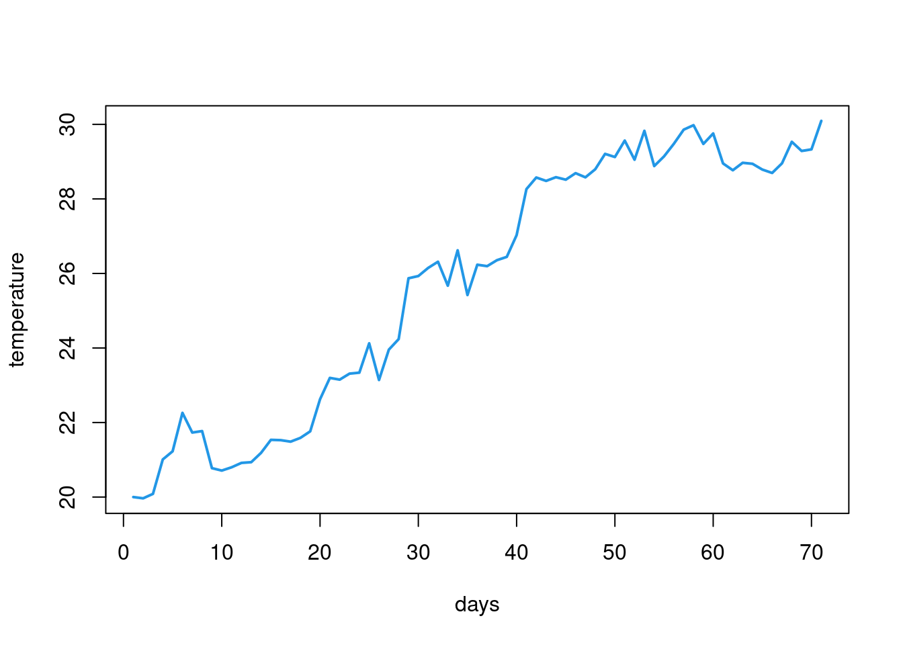

if (condition) {
Do this
And do this
}Loops and conditionals
The flow of code
Now you know how to create different kinds of objects and how to perform simple operations with them. However, very often you want to add more control over how operations are ran in R. You might want to execute a command only if a condition is satisfied. Or you might want to make the same operations for a number of elements. These are the kinds of situations for which you want to use flow control. What this refers to is basically altering how the code is executed. In a regular situations all commands from your script are executed from the first line all the way down to the last line. Flow control alters that either by specifying condiotinal statements that tell R to execute a given chunk of code only if a condition is met or by using loops that repeat a given chunk of code.
Conditional statements
Another way conditional statements are referred to which may be more intuitive are if else statements. They allow you to tell R to execute given chunk of code if a condition is met and to do something else if the condition is not met.
The general logic of conditional statements looks like this:
A single if statement can have multiple conditions chained together with | and & operators. So, for example
x <- 5
y <- -5
if (x > 0 & y < 0) {
print("Hooray!")
}[1] "Hooray!"In many situations you want to state what is to be done if a condition is met and what to do otherwise. This turns your statement into an if else one. The only difference is that after the if statement you add else and specify what to do then in curly brackets. With this knowledge you can already create the rules for a simple game like paper, rock, scissors!
#set the choice for each player
player1 <- 'scissors'
player2 <- 'rock'
#define an if statement that outputs the result of the game
if (player1 == player2) {
print('draw')
} else if ((player1 == 'scissors' & player2 == 'paper') |
(player1 == 'paper' & player2 == 'rock') |
(player1 == 'rock' & player2 == 'scissors')) {
print('player 1 wins')
} else if ((player2 == 'scissors' & player1 == 'paper') |
(player2 == 'paper' & player1 == 'rock') |
(player2 == 'rock' & player1 == 'scissors')) {
print('player 2 wins')
} else {
print('these are not allowed moves')
}[1] "player 2 wins"Take a moment to study the code above. Notice what kinds of conditions are included in that statement. When writing an if statement it’s a good idea to consider all possible situations and how your if statement maps to them. In a paper, rock, scissors game you can have 3 outcomes: both players choose the same option (a draw), player 1 wins or player 2 wins. Notice that the code above includes also a fourth options specified in the last else statement. What if someone makes a typo and writes rook instead of rock? That last else statement safeguards us for such situations. If we didn’t include it and someone made a type then our if else statement wouldn’t produce anything. You can play around with different values of player1 and player2 to see the results.
One more thing about if else statements: in many situations it is a good idea to give some thought to what exactly a given statement is supposed to do and how large the statement needs to be. A good example is an if statement that is supposed to run some check (e.g. make sure that we are working with a numeric value) and stop execution if it detects a problem. Imagine a situation in which we want to do some calculations on numbers and want to make sure that we are indeed working with numeric values. you could design an if else statement that would do it:
x <- 'not a number'
y <- 3
if ((class(x) != 'numeric') | (class(y) != 'numeric')) {
stop('This is not a number!')
} else {
x + y
}Error: This is not a number!Take a moment to look at the code above. Do you think it is good? It certainly gets the job done. Do you think it could be simplified?
In fact the else part is redundant in this case. The if statement runs the check on x and y and stops execution of the code if any of them is not numeric. If both values are numeric the execution of code simply proceeds. In this case adding an else statement makes the code harder to read (and imagine what would happen if we had to perform a number of checks like this! We would need a lot of if else statements that would make everything even less clear). The code below does the same thing as the if else statement above but is more clear.
x <- 'not a number'
y <- 3
if ((class(x) != 'numeric') | (class(y) != 'numeric')) {
stop('This is not a number!')
}
## Error: This is not a number!
x + y
## Error in x + y: non-numeric argument to binary operatorLoops
Another way of controlling the flow of your code is by repeating a given chunk of code. There are two basic ways to do that: repeat something a number of times or keep repeating until some condition is met. The first way is called a for loop and the second one a while loop.
for loops
Before we make our first for loop lets take a moment to see when a for loop is not needed. Recall again that a lot of things in R are vectorized. This means that operations on vectors are conducted element-wise. Thanks to this if you want to e.g. add 5 to each value stored in a numeric vector (in the language of a for loop: for every element of a vector, add 5 to it) you can just write vector_name + 5. No need for more complicated, explicit repetition. However, there are situations in which you have to make an explicit for loop to repeat something n times. The general structure of a for loops looks like this:
for (i in object) {
Do this to each element
}It’s worth keeping in mind what the i in the for loop is. In the example above i will be every consecutive element of object. However we could do a similar thing with:
for (i in 1:length(object)) {
do this to object[i]
}Now each i is a number from 1 to thew length of object and we access each element of object by using a proper (ith) index. Which way of running a for loop you choose might depend on the context. looping explicitly over elements of an object rather than indexes can be more intuitive but imagine you don’t want to do something to every element of an object but only to to a subset (e.g. from 3rd inwards). Doing it with indexes is easier. Generally the best approach is to think what you need first and write code code second, not the other way around.
Lets say we want to get a geometric sequence which starts from 1 and in which each next number is the previous number times 1.5. We can easily create the first 20 numbers from that sequence with a for loop:
v <- c(1)
for (i in 1:20) {
v[i+1] <- v[i]*1.5
}
v [1] 1.00000 1.50000 2.25000 3.37500 5.06250 7.59375
[7] 11.39062 17.08594 25.62891 38.44336 57.66504 86.49756
[13] 129.74634 194.61951 291.92926 437.89389 656.84084 985.26125
[19] 1477.89188 2216.83782 3325.25673Lets look at another example. sThere is a dataset available in R on airquality in New York City called airquality. It stores information on ozone, sun, wind and temperature from 5 months. One of the things that might be of interest when looking at the dataset is what was the average value of each of the variables informing on airquality. Lets first look at the dataset:
data("airquality")
d <- airquality
d <- na.omit(d)
head(d) Ozone Solar.R Wind Temp Month Day
1 41 190 7.4 67 5 1
2 36 118 8.0 72 5 2
3 12 149 12.6 74 5 3
4 18 313 11.5 62 5 4
7 23 299 8.6 65 5 7
8 19 99 13.8 59 5 8The first 4 columns are of interest here. We can loop over these columns and for each calculate their mean and append it to the vector of results (which we need to create before starting the loop). Just to be sure which value is the mean of which variable we can name the elements of the resulting vector with names of the columns after the for loop:
results <- c()
for (v in d[,1:4]) {
m <- mean(v)
results <- c(results, m)
}
names(results) <- colnames(d[,1:4])
results Ozone Solar.R Wind Temp
42.09910 184.80180 9.93964 77.79279 While loops
While loops will keep executing a given chunk of code as long as some condition is met. They aren’t very common in R, at least not until you start building your own algorithms or simulations from scratch. However, it’s worth knowing what they are in case you encounter them.
We can use a while loop to make a very simple simulation. Lets say we want to see how temperatures change from a given temperature (lets say 20 degrees Celsius) across time and that we represent time by some random change from each previous temperature. We can create a vector with such predicted temperatures and see how long it takes for it to reach a certain level (lets say 30 degrees Celsius). We represent the change by adding a random value from a normal distribution with mean = .05 and standard deviation = .5 (this is what the rnorm(1,.05,.5) does). The while loop would look something like this: We first create the initial value and a vector to store all temperatures and next we keep adding the random value to our temperature and storing all temperatures until it reaches 30. The last line tells R to plot all the temperatures as a line plot. This is of course a very, very, very simplistic simulation (temperatures don’t change in such a simple way) but it works to show you the idea behind while loops. We can then calculate e.g. how long it took for the temperature to reach a certain level.
C <- 20
results <- c(20)
while (C < 30) {
C <- C + rnorm(1,.05,.5)
results <- c(results, C)
}
plot(results, type = 'line', lwd = 2, col=4, xlab = "days", ylab = "temperature")Warning in plot.xy(xy, type, ...): plot type 'line' will be truncated to first
character
Because while loops do not have a fixed number of iteration they can potentially run infinitely. This is usually not something we want so it’s a good idea to make sure that your while loop eventually stops. In case you do get stuck in an infinite loop you can press Esc in your console and this should make RStudio stop the loop by force.
Truth is while loops are not common in R. You will rarely find yourself in situation where you need to perform some actions while a given condition is true (e.g. keep a program running until a user presses exit; keep displaying a board of a game until a player makes a move). However, it’s still good to know what while loops are so that you will know one when you see it.
Apply family
There is a special family of functions in R that makes working with for loops a bit easier. These functions let you specify what to loop over and what function to apply to each element but in a function rather than a whole loop with all the curly brackets and stuff.
The reason why this is a whole family of functions is that you can iterate in various ways and you can get the output in different formats. There are more functions in the family but the general ones are:
lapply()- loops over elements of a vector/list and returns a listsapply()- same as lapply but tries to simplify the result to a vector or matrixapply()- used for looping over 2 dimensional structures - it lets you specify if you want to loop over rows or columnstapply()- same as apply but lets you split the object you are looping over based on some factor (e.g. imagine you want to calculate the mean value of your dependent variable for each experimental condition).
Lets see some of these in action.
Example 1:
Imagine you are working with a list in R. You want to get information on how many elements each object in the list has. sapply makes it very easy:
my_list <- list(
1:50,
sample(300, 5),
c("random", "vector")
)
sapply(my_list, length)[1] 50 5 2Example 2:
Remember the airquality dataset and calculating the mean of each numeric variable? We can achieve the same thing with apply() instead of a for loop:
apply(d[,1:4], 2, mean) Ozone Solar.R Wind Temp
42.09910 184.80180 9.93964 77.79279 Notice that the means calculated above are global means from the entire dataset. What is probably much more sensible is a mean for each month. There is one additional trick needed here. Tapply won’t allow us to split a number of columns by some vector and perform a given operation on each of the columns. That’s because tapply works on vectors. In order to get monthly means for all 4 columns we need to combine apply with tapply. What we need to do is start with apply and loop over the 4 columns of interest and for each of them use tapply that will split a given column by month and calculate the means. Combining functions can get us really far if only we give some thought to what each function does (including what are its inputs and outputs) and what we really need to do. notice that tapply() is preceded by function(x). We’ll learn more about them when looking at functions but for now think about it as an expression that allows us to specify some function that takes x as its main argument (in this case these are going to be columns from the airquality dataset) and apply some custom function to it.
apply(d[,1:4], 2, function(x) tapply(x, d$Month, mean)) Ozone Solar.R Wind Temp
5 24.12500 182.0417 11.504167 66.45833
6 29.44444 184.2222 12.177778 78.22222
7 59.11538 216.4231 8.523077 83.88462
8 60.00000 173.0870 8.860870 83.69565
9 31.44828 168.2069 10.075862 76.89655One important thing about apply functions is that they are generally faster than explicit for loops. Same thing goes for vectorized code as well - it’s faster than a for loop. We can make a simple comparison by using the microbenchmark package to make the same thing with a for loop and apply() function. We’ll save it as bench
Now if we look at the results:
benchUnit: milliseconds
expr min lq mean
for (i in 1:ncol(df)) { print(mean(df[, i])) } 3.205032 3.248893 3.357500
apply(df, 2, mean) 4.544029 6.057564 7.301477
median uq max neval
3.280386 3.395416 4.505267 100
6.122490 6.267045 63.364125 100You can see that apply() is much faster than a for loop.
Exercises
Try to code the logic of assigning points to players of a prisoner dilemma with a given matrix:
exercise 1
#' we need to specify outcomes based on Prisoner 1 and prisoner 2 choices. #' We'll need a series of ifelse statements to code each of the 4 possible outcomes. #' Lets define the choices as choice1 and choice2 and store infoirmation on which choice each on of these is. #' Next lets define some choices by the prisoners. #' We need to define if statements that will cover all possible combinations of choices for prisoners 1 and 2. #' We can do it by: #' 1. Creating an if else statement for the choice of prisoner 1 #' 2. inside that if else statement create if else statements for prisoner 2. #' 3. Assign vector of results depending on ech combination of prisoner 1 and 2 choices. #' You can copy this code and change values of Prisoner1 and Prisoner2 to choice1 or choice2 to see if the results change. choice1 <- "Stay silent" choice2 <- "Betray and testify" Prisoner1 <- choice1 Prisoner2 <- choice2 if(Prisoner1 == choice1) { if(Prisoner2 == choice1) { result <- c(P1_result = 1, P2_result = 1) } else { result <- c(P1_result = 0, P2_result = 10) } } else { if(Prisoner2 == choice1) { result <- c(P1_result = 10, P2_result = 0) } else { result <- c(P1_result = 6, P2_result = 6) } } resultCreate a for loop that will print out the first 50 numbers from the Fibonacci sequence
exercise 2
#' The fibonacchi sequence atarts with a 0 and 1 and then each next number is the #' sum of previous 2 numbers. This means we will need to first define the 2 first numbers #' and then run a loop that for every iteration i will print the sum of ith-1 and ith-2 #' numbers from the sequence. Since the first 2 numbers are defined #' we can loop from 3 to 50 (that's hoew many numbers we are to print) x <- c(0,1) for(i in 3:50) { x_i <- sum(x[i-1], x[i-2]) x <- c(x, x_i) print(x_i) }[1] 1 [1] 2 [1] 3 [1] 5 [1] 8 [1] 13 [1] 21 [1] 34 [1] 55 [1] 89 [1] 144 [1] 233 [1] 377 [1] 610 [1] 987 [1] 1597 [1] 2584 [1] 4181 [1] 6765 [1] 10946 [1] 17711 [1] 28657 [1] 46368 [1] 75025 [1] 121393 [1] 196418 [1] 317811 [1] 514229 [1] 832040 [1] 1346269 [1] 2178309 [1] 3524578 [1] 5702887 [1] 9227465 [1] 14930352 [1] 24157817 [1] 39088169 [1] 63245986 [1] 102334155 [1] 165580141 [1] 267914296 [1] 433494437 [1] 701408733 [1] 1134903170 [1] 1836311903 [1] 2971215073 [1] 4807526976 [1] 7778742049Given the
irisdataframe (you can load it withdata("iris")loop over all of its columns and calculate the mean of every numeric columnexercise 3
#' What we are supposed to do is: #' 1. load the iris dataset #' 2. loop over numeric columns (there is 1 column that is not numeric) #' 3. for each column calculate its mean data("iris") results <- c() for(i in 1:ncol(iris)) { if(is.numeric(iris[,i])) { results <- c(results, mean(iris[,i])) } } #if we want to format the names of values in the vector we can extract the names of numeric columns. #The sapply function returns a vector of logical values with TRUE for every numeric column #in the dataset. We can use that vector to subset the dataset and get only numeric columns. names(results) <- colnames(iris[,sapply(iris, is.numeric)]) results #We can also shorten the for loop and use apply instead. #THis time we'll need to loop over the dataset with numeric columns selected apply(iris[,sapply(iris, is.numeric)], 2, mean)Create a vector of numbers randomly drawn from a normal distribution with a mean of 2 and standard deviation 0.5. Loop over a sequence of 100 numbers from the minimum to the maximum of the vector you created. For each value in the sequence calculate the sum of squared differences from each value in the vector. Store all the sums in a new vector. Which value in the sequence minimizes the sum of squared distances?
exercise 4
#' What the exercise asks us to do is: #' 1. Create a vector of numbers drawn from normal distribution wiht mean = 2 and sd = .5. We can use rnorm() for that. #' 2. loop over a sequence of numbers from the minimum to maximum of our vector and for each value calculate the sum of squared distances of each number from a given number in the sequence. This will require: #' 2a. Define a vector to store the sums of squared distances #' 2b. Start the for loop over seq(min(v1), max(v1), .1). You can change the distance in seq from .1 to something else if you want to see with different resolution #' 2c. For each i in the sequence calculate the sum of squared differences and append it to vector #' 3. Preferrably name the vector with results #' 4. Find the minimum number #the number we get as mimizing the sum of squared differences is certainly #going to be the one closest to the mean (you can check it with mean(v1) if you want)! v1 <- rnorm(1000, 2, .5) sums_squared <- c() for(i in seq(min(v1), max(v1), .1)) { diff_i <- sum((i - v1)^2) sums_squared <- c(sums_squared, diff_i) } to_name <- seq(min(v1), max(v1), .1) names(sums_squared) <- to_name sums_squared[which.min(sums_squared)]